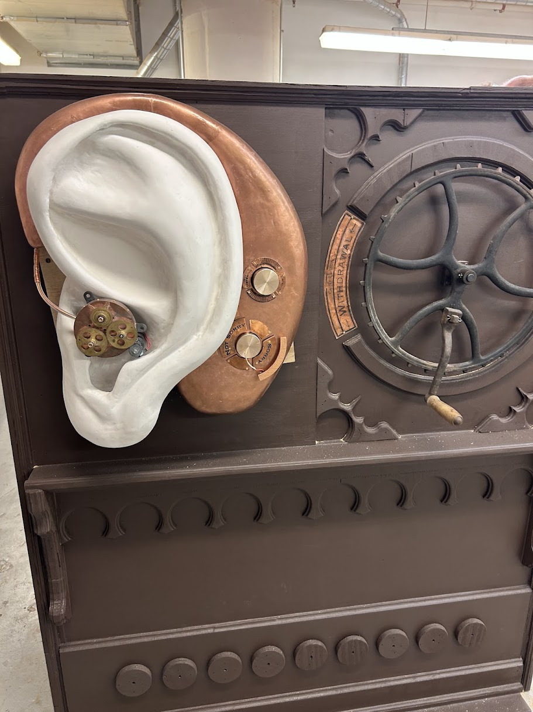
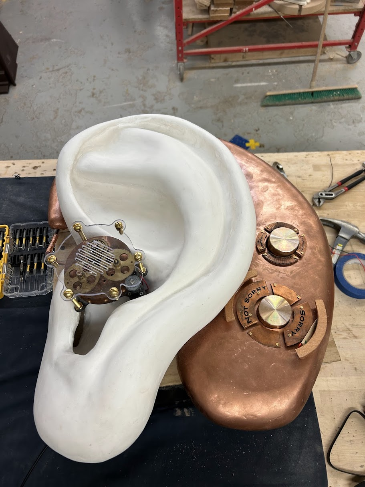
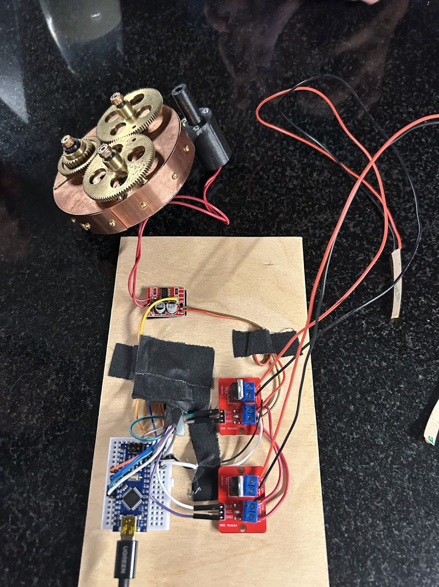

Interactive confession teller • Motorized hearing aid • Dial-driven voice styling

Like any bank, this one has tellers—just… weirder. With the Ear Teller, visitors whisper a confession, spin a pair of dials, and hear someone else’s confession read back with a voice modifier that matches the dial settings. One dial leans toward “sorry,” the other toward “not sorry,” and together they shape how the story is performed.

I handled the motion and some of the tricky integration details. For the mechanical ear, Spatial Pixel repurposed gears from an old grandfather clock. I designed a compact mount for an N20 DC motor to drive the train, and wired it into a 5 V architecture so an Arduino Nano and a small motor driver dropped right in.

The Teller runs on a tidy low-voltage stack—motor, Nano, drivers, and the AI box from Spatial Pixel. The goal was museum reliability: clean wiring, serviceable mounting, and components that play nicely together in a 5 V world.
The dials weren’t regular potentiometers—they were quadrature encoders flashed as a keyboard. That means they report movement (steps left/right) but not an absolute angle. We wanted the dials to set how “sorry” or “not sorry” a confession sounds, but without a home switch or fixed power-up orientation, we never truly “know” where the dial is pointing.
My solution was to make absolute position unnecessary. I added LEDs whose brightness tracks the same value that drives the voice style. As the encoder spins, we change a “sincerity” variable; that single variable feeds both the LED brightness and the voice modifier. Because both outputs share the same number, users get clear, immediate feedback—brighter toward “sorry,” dimmer toward “not sorry”—and we never need to measure the dial’s true angle. It’s intuitive with two dials, too, because each dial controls its own LED and parameter.
There are other ways to solve this (limit switch, hard index, always start at a known angle), but this approach kept the hardware simple, felt more interactive, and solved the core problem elegantly.
The Ear Teller is integrated and exhibition-ready. The motor drive is reliable, the AI readback feels alive, and the dial logic works smoothly without extra sensors.